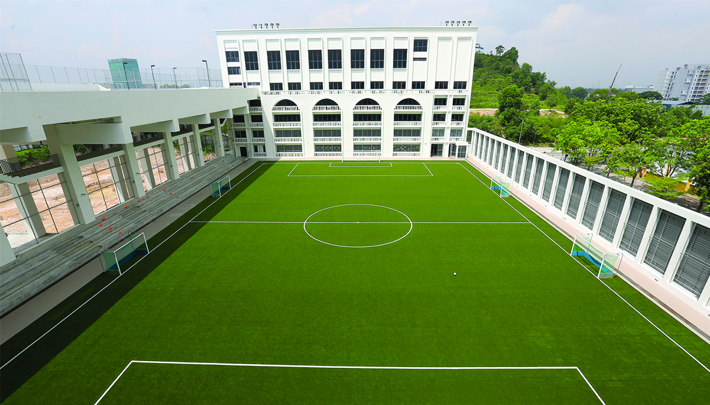
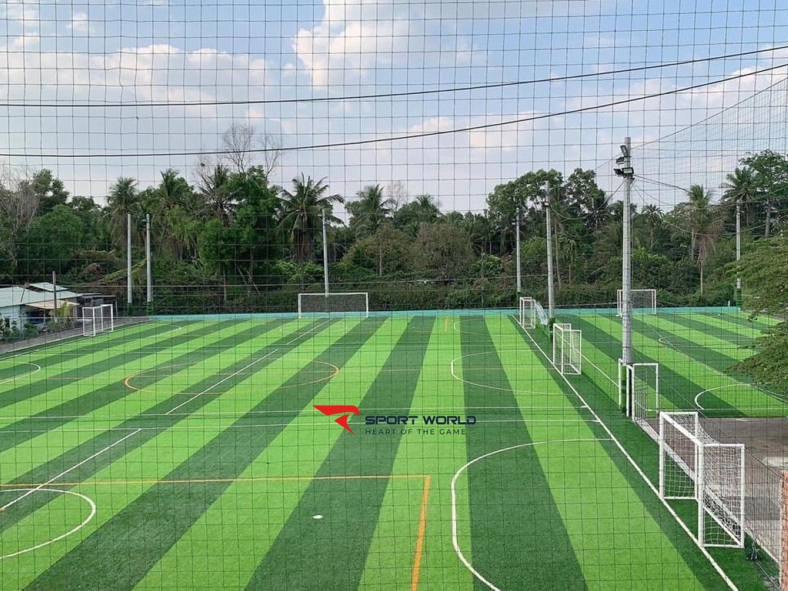

Sân bóng đá mini chảo lửa scsc không chỉ là một địa điểm thể thao mà còn là một biểu tượng thân thuộc với các tín đồ bóng đá phong trào tại thành phố Hồ Chí Minh. Nằm tại số 30 Phan Thúc Duyện, phường 4, quận Tân Bình, địa điểm này không chỉ thuận tiện cho việc di chuyển mà còn gần với các khu tiện ích như siêu thị Maximax Cộng Hòa, giúp người chơi dễ dàng kết hợp thể thao và mua sắm. Với sự phục vụ nhiệt tình và tổ chức của nhiều giải đấu bóng đá phong trào, chảo lửa scsc nhanh chóng trở thành “ngôi nhà thứ hai” cho nhiều người yêu thích môn thể thao vua.
Sân Bình Lợi Trung

Sân đá bóng Bình Lợi Trung là một điểm đến lý tưởng cho những ai yêu thích thể thao, đặc biệt là bóng đá. Nằm ở huyện Bình Chánh, TP.HCM, sân được trang bị cỏ nhân tạo chất lượng cao, mang đến trải nghiệm thi đấu thoải mái và an toàn. Với không gian rộng rãi và thoáng mát, sân thường xuyên tổ chức các trận đấu phong trào, thu hút đông đảo các đội bóng tham gia. Ngoài ra, dịch vụ cho thuê sân, bóng và áo đấu cũng rất thuận tiện, giúp người chơi dễ dàng sắp xếp lịch thi đấu. Đây thực sự là một nơi lý tưởng để giao lưu, rèn luyện sức khỏe và thể hiện đam mê bóng đá.
Sân Cá Rô Đồng

Sân bóng đá cá rô đồng là một điểm đến hấp dẫn cho những người yêu thích thể thao tại tỉnh Đồng Tháp. Nằm trong không gian thiên nhiên xanh mát, sân cung cấp cỏ nhân tạo chất lượng cao, mang lại trải nghiệm thi đấu thoải mái cho các đội bóng phong trào. Với cơ sở vật chất đầy đủ và dịch vụ cho thuê sân linh hoạt, nơi đây thường xuyên tổ chức các trận đấu và giải đấu, thu hút đông đảo người chơi. Sân không chỉ là nơi rèn luyện sức khỏe mà còn là cầu nối để kết nối đam mê bóng đá và tạo ra những kỷ niệm đẹp cho cộng đồng.